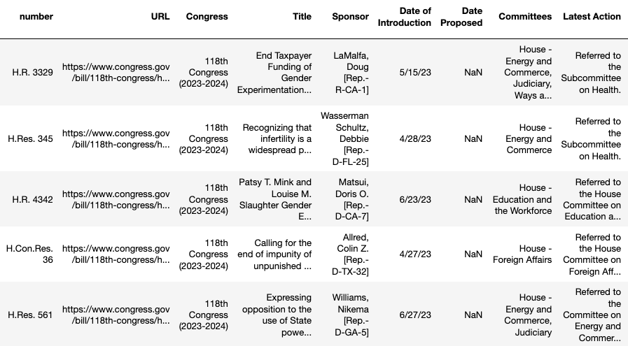

gathering data: web scraping#
Researchers generally only share the analysis they have done after they got the data, which makes it hard for beginners to replicate the process. For that reason, I’m showing the data gathering process, which involves complicated steps like using APIs (or, if APIs fail to work, web scraping) and cleaning the resulting data.
This section outlines this often invisible and challenging data gathering process. It begins with an overview of the topic, the anti-trans legislation. Then, it explains the code I used to download bill data from congress.gov and scrape the text of the individual bills. Finally, it demonstrates how I cleaned extraneous information from the text, like formatting, some punctuation, and blank spaces.
anti-trans legislation#
Over the past several years, there has been a dramatic increase in “anti-trans legislation,” that is, legislation that limits trans peoples’ rights. According to the Trans Legislation Tracker, in just one month in 2023 (the year of this writing), “the U.S. doubled the number of anti-trans bills being considered across the country from the previous year.”
Many of these bills block access to healthcare that is gender-affirming and to public places and activities, like the “bathroom bans,” the bans in sports, and the bans on expressing gender identity in school. The explosion of bills across the country not only codifies discrimination, but also reflects a worrying trend about how the general public views trans peoples’ existence and rights.
I am interested in examining the language of the bills themselves for the assumptions they might make about sex and gender. How are these terms being defined? Are they being defined as biological fact, cultural phenomena, or a mixture of both? What assumptions are being made in these definitions? How do certain perspectives exacerbate the current discrimination against trans people?
web scraping#
To ge my data, I got the bill numbers from www.congress.gov, then used those numbers to scrape the plain text from the congress.gov servers. I’ll go through the whole process step-by-step.
First, I got a list of the relevant bills using the regular search function on the congress.gov website. I did a search for the term “gender,” and then downloaded the results to a spreadsheet. (Side note: the ability to download results from a search is super useful, and most websites won’t offer that functionality. I actually spent about an hour trying to figure out how to scrape the results before I even noticed the little “download” button that appears next to “save your search.” Interestingly, this button only appears after you’ve begun to put some filters on the search results. I guess that’s to discourage downloading all of the results at once. Either that, or its pretty wonky behavior!)

Then, I opened up a Python notebook (like the one on this page), and used the requests library in Python to get the text of the bills. (FYI - I tried using the congress.gov API first, which is always the right thing to do! But it doesn’t offer the full text of the bill. For future reference, you can request an API key here: https://api.congress.gov/)
The code for grabbing bill text begins with loading the necessary libraries (like requests) and the spreadsheet with the search results from congress.gov.
# importing necessary libraries
import requests # for making http (web) requests
import pandas as pd # for working with tabular (spreadsheet) data
import csv # also for working with tabular data, in csv format
# saving the search results from congress.gov
bills = pd.read_csv('bill_data.csv')
# creating a "dataframe" in pandas (a python library for working
# with spreadsheet like data
df = pd.DataFrame(bills)
At the end of the process, I have a DataFrame (that is, data in a tabular format) that looks like the following:

Then, I go through the spreadsheet to pull out the bill numbers, from the column all the way on the left. These numbers will be fed into a function that inserts them into the URL that will access congress.gov servers.
## go through each row in numbers column of our spreadsheet
## extract the number and put into a separate list
numbers = []
for row in df['number']:
splitted = row.split(' ')
for item in splitted:
if item.isnumeric():
numbers.append(item)
# function that contains a loop to insert bill numbers
# into the URL, then to grab the content and add to a new list
def scrape_bill_text(numbers):
billz = []
for item in numbers:
bill = (f'hr{item}')
url = (f'https://www.congress.gov/118/bills/{bill}/BILLS-118{bill}ih.htm')
response = requests.get(url)
content = response.content
billz.append(content)
return billz
# call the function, passing the list of numbers as parameter
full_text = scrape_bill_text(numbers)
Next, I turned the results, which is a bytes (or binary) object, into a string (or alphanumeric character) type of object, so that I could manipulate it. Then I saved the results, just so I could have a copy of them.
strings = []
for item in full_text:
i = str(item)
strings.append(i)
with open('bill_text.txt', 'w') as f:
for item in full_text:
f.write(str(item))
Now, finally, I have the full text of the bills saved as a txt file. The text looks like the following:
<html><body><pre>\n[Congressional Bills 118th Congress]\n[From the U.S. Government
Publishing Office]\n[H.R. 3329 Introduced in House (IH)]\n\n<DOC>\n\n\n\n\n\n\n118th
CONGRESS\n 1st Session\n H. R. 3329\n\nTo prohibit
taxpayer-funded gender transition procedures, and for other \n
purposes.\n\n\n_______________________________________________________________________\n\n\n
IN THE HOUSE OF REPRESENTATIVES\n\n May 15, 2023\n\n Mr. LaMalfa
(for himself, Mrs. Boebert, Mr. Lamborn, Mr. Gosar, Mr. \nBanks, Mr. Duncan, Mr. Babin, Mr. Rouzer,
Mr. Barr, Mr. Rosendale, Mr. \nWeber of Texas, Mr. Brecheen, Mr. Norman, Mrs. Miller of Illinois,
Mr. \n Grothman, Mr. Wilson of South Carolina, Mr. Mills, Mr. Burlison, Mr. \n Smith of New
Jersey, Mr. Aderholt, Mrs. McClain, Mrs. Lesko, Mrs. \n Harshbarger, Mr. Nehls, Mr. Kelly of
Mississippi, Mr. Ogles, Mr. \n Fallon, Mr. LaTurner, Mr. Davidson, Mr. Gaetz
The next step will be to clean the text of the html characters and other unwanted characters and whitespace.
First, I load it back up. Then, I run a function to take out all of the = characters that we don’t want like <html>, \n, __, as well as any whitespaces. Finally, I save to a new text file, called clean.
# loading up the texts that we just saved
load = open('bill_text.txt')
data = load.read()
load.close()
# remove all the characters in the "take out" list by writing a
# loop that replaces those characters with an empty character, ''
def clean_up(text):
take_out = ['\n', '/n', '\\n', '_', '[', ']', '<html><body><pre>', '<html><body><pre>', ' ']
for item in take_out:
if item in text:
text = text.replace(item, '')
return text
cleaned = clean_up(data)
# save plain to a separate text file
with open('clean.txt', 'w') as f:
# using csv.writer method from CSV package
f.write(cleaned)
Now the text is ready to be loaded into spaCy!